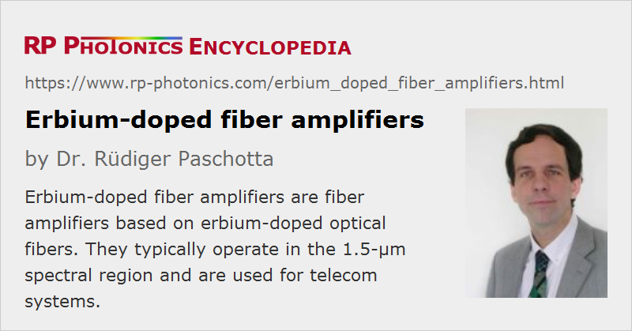

Erbium-doped Fiber Amplifiers
Acronym: EDFA
Definition: fiber amplifiers based on erbium-doped optical fibers
More general term: fiber amplifiers
German: Erbium-dotierte Faserverstärker
Categories: fiber optics and waveguides, photonic devices, optical amplifiers, lightwave communications
How to cite the article; suggest additional literature
Author: Dr. Rüdiger Paschotta
Erbium-doped fiber amplifiers are the by far most important fiber amplifiers in the context of long-range optical fiber communications; they can efficiently amplify light in the 1.5-μm wavelength region, where telecom fibers have their loss minimum. The core element of a fiber amplifier is a piece of rare-earth-doped fiber, which can provide laser amplification via stimulated emission when it is optically pumped with other light injected into the fiber. See the article on fiber amplifiers for information on more general aspects.
Setup and Operation Principle
A typical setup of a simple erbium-doped fiber amplifier (EDFA) is shown in Figure 1. Its core is the erbium-doped optical fiber, which is typically a single-mode fiber. In the shown case, the active fiber is “pumped” with light from two laser diodes (bidirectional pumping), although unidirectional pumping in the forward or backward direction (co-directional and counter-directional pumping) is also very common. The pump light, which most often has a wavelength around 980 nm and sometimes around 1450 nm, excites the erbium ions (Er3+) into the 4I13/2 state (in the case of 980-nm pumping via 4I11/2), from where they can amplify light in the 1.5-μm wavelength region via stimulated emission back to the ground-state manifold 4I15/2. (See also Figure 1 in the article on erbium-doped gain media.)

The setup shown also contains two “pig-tailed” (fiber-coupled) optical isolators. The isolator at the input prevents light originating from amplified spontaneous emission from disturbing any previous stages, whereas that at the output suppresses lasing (or possibly even destruction) if output light is reflected back to the amplifier. Without isolators, fiber amplifiers can be sensitive to back-reflections.
Apart from optical isolators, various other components can be contained in a commercial fiber amplifier. For example, there can be fiber couplers and photodetectors for monitoring optical power levels, pump laser diodes with control electronics and gain-flattening filters. For particularly compact packages, various passive optical components can be combined into a photonic integrated circuit (planar lightwave circuit).
Very high signal gains, as used, e.g., for the amplification of ultrashort pulses to high energies, are usually realized with amplifier chains, consisting of several amplifier stages with additional optical elements (e.g. isolators, filters, or modulators) in between.
Gain Spectrum
The shape of the erbium gain spectrum depends on the absorption and emission cross sections, which depend on the host glass. Also, the spectral shape of the gain and not only its magnitude is substantially influenced by the average degree of excitation of the erbium ions, because these have a quasi-three-level transition. Figure 2 shows data for a common type of glass, which is some variant of silica with additional dopants e.g. to avoid clustering of erbium ions. Other glass compositions can lead to substantially different gain spectra.

Strong three-level behavior (with transparency reached only for > 50% excitation) occurs at 1535 nm. In that spectral region, the unpumped fiber exhibits substantial losses, but the high emission cross section allows for a high gain for strong excitation. At longer wavelengths (e.g. 1580 nm), a lower excitation level is required for obtaining gain, but the maximum gain is smaller.
The maximum gain typically occurs in the wavelength region around 1530–1560 nm, with the 1530-nm peak being most pronounced for high excitation levels, whereas low excitation levels lead to gain maxima at longer wavelengths. The local excitation level depends on the emission and absorption cross sections and on the pump and signal intensity (apart from that of ASE light). The average excitation level over the whole fiber length, as is relevant for the net gain spectrum, depends on the pump and signal powers, but also on the fiber length and the erbium concentration. Such parameters (together with the choice of glass composition) are used to optimize an EDFA for a particular wavelength region, such as the telecom C or L band.
A good flatness of the gain in a wide wavelength region (→ gain equalization), as required e.g. for wavelength division multiplexing (see below), can be obtained by using optimized glass hosts (e.g. telluride or fluoride fibers, or some combination of amplifier sections with different glasses) or by combination with appropriate optical filters, such as long-period fiber Bragg gratings.
Erbium-doped Amplifiers in Telecom Systems
EDFAs can serve various functions in systems for optical fiber communications; the most important applications are the following:
- The power of a data transmitter may be boosted with a high-power EDFA before entering a long fiber span, or a device with large losses, such as a fiber-optic splitter. Such splitters are widely used e.g. in cable-TV systems, where a single transmitter is used to deliver signals into many fibers.
- A fiber amplifier may also be used in front of a data receiver, if the arriving signal is weak. Despite the introduction of amplifier noise, this can improve the signal-to-noise ratio and thus the possible data transmission rate, since the amplifier noise may be weaker than the input noise of the receiver. It is more common, however, to use avalanche photodiodes, which have some built-in signal amplification.
- In-line EDFAs are used between long spans of passive transmission fiber. Using multiple amplifiers in a long fiber-optic link has the advantage that large transmission losses can be compensated without (a) letting the optical power drop to too low levels, which would spoil the signal-to-noise ratio, and (b) without transmitting excessive optical powers at other locations, which would cause detrimental nonlinear effects due to the unavoidable fiber nonlinearities. Many of these in-line EDFAs are operated even under difficult conditions, e.g. on the ocean floor, where maintenance would be hardly possible.
- Although data transmitters are normally not based on erbium-doped devices, an EDFA can be part of equipment for testing transmission hardware. It can also be used in the context of optical signal processing.
These functions can be realized in the telecom C and L bands. Other types of fiber amplifiers, e.g. based on praseodymium, have been considered for other bands, but none can compete with erbium-based devices in terms of gain and gain efficiency.
A particular attraction of EDFAs is their large gain bandwidth, which is typically tens of nanometers and thus actually more than enough to amplify data channels with the highest data rates without introducing any effects of gain narrowing. A single EDFA may be used for simultaneously amplifying many data channels at different wavelengths within the gain region; this technique is called wavelength division multiplexing. Before such fiber amplifiers were available, there was no practical method for amplifying all channels e.g. between long fiber spans of a fiber-optic link: one had to separate all data channels, detect and amplify them electronically, optically resubmit and again combine them. The introduction of fiber amplifiers thus brought an enormous reduction in the complexity, along with a corresponding increase in reliability. Very long lifetimes are possible by using redundant down-rated pump diodes.
Most erbium-doped fiber amplifiers are based on single-mode fiber. However, other types of fiber amplifiers have recently been developed, which can be used in the context of space division multiplexing. Here, the fiber is either a multi-core fiber or a few-mode fiber. Such amplifiers need to be optimized such that the gain in the different cores, or in the second case for the different fiber modes, is quite similar.
The only competitors to erbium-doped fiber amplifiers in the 1.5-μm region are Raman amplifiers, which profit from the development of higher power pump lasers. Raman amplification can also be done in the transmission fiber. Nevertheless, EDFAs remain very dominant.
Various Technical Details
The most common pump wavelength for EDFAs is around 980 nm. Light at this wavelength pumps erbium ions from their ground-state manifold 4I15/2 to the 4I11/2 manifold, from where there is a quick non-radiative transfer to the upper laser level 4I13/2. Due to that quick transfer, there is essentially no deexcitation via stimulated emission by pump light, and very high excitation levels can be achieved. Therefore, this approach makes it possible to achieve the highest gain efficiency (order of 10 dB/mW) and the lowest noise figure, although the power efficiency is not ideal due to the significant quantum defect.
A higher power efficiency can be achieved by in-band pumping around 1450 nm. However, stimulated emission by pump light then limits the achievable excitation level, hence also the gain per unit length, and the maximum gain occurs at longer wavelengths. The noise figure will also be higher.
Due to the not very high laser cross sections, the saturation power of an EDFA is fairly high compared with that of a semiconductor optical amplifier. Therefore, single symbols in high bit rate data transmissions have a much too low energy to cause any significant gain saturation. Only over thousands or millions of symbols, the gain adjusts itself to the average signal power level.
In high-gain amplifiers, amplified spontaneous emission (ASE) is often a factor limiting the achievable gain. Due to the quasi-three-level nature of the erbium ions, ASE powers can be different between forward and backward direction, and the maximum ASE can occur at a wavelength which differs from that of maximum gain.
The noise figure of an EDFA is slightly larger than the theoretical limit of 3 dB for a high-gain amplifier; this is mainly due to the quasi-three-level nature. Relatively low-noise performance can be achieved with suitable amplifier design, taking into account particularly the erbium excitation level near the signal input end, which can be strongly influenced by, e.g., the pump direction.
Various aspects of erbium-doped amplifiers can be analyzed with suitable fiber simulation software. The resulting quantitative understanding can be the basis for optimization of devices in terms of performance and required components.
Variants and Other Applications of Erbium-doped Fiber Amplifiers
A high gain in a shorter length can be achieved with ytterbium-sensitized fibers (also called Er:Yb:glass fibers or ytterbium-codoped fibers). In addition to the erbium dopant, these contain some significant concentration of Yb3+ ions (typically much more ytterbium than erbium). Ytterbium ions may then be excited e.g. with 980-nm pump light (or even at longer wavelengths such as 1064 nm) and transfer their energy to erbium ions. For a proper choice of the material composition of the fiber core, this energy transfer can be fairly efficient. However, the use of pure erbium-doped fibers is more common in the telecom area, because ytterbium sensitization has no essential advantages here and possibly leads to a reduced gain bandwidth due to the modified chemical composition.
Erbium-doped double-clad fibers can be used for generating very high output powers of tens of watts or even more. As the pump absorption efficiency can be weak in this case, an ytterbium-sensitized core may again be useful.
It is also possible to amplify ultrashort pulses in the 1.5-μm region to relatively high energies, using EDFAs in the form of amplifier chains. One exploits the relatively high saturation energy of such amplifiers, particularly when using erbium-doped large mode area fibers.
Suppliers
The RP Photonics Buyer's Guide contains 37 suppliers for erbium-doped fiber amplifiers. Among them:
Questions and Comments from Users
2020-06-15
What is the limitation on minimum optical input power to an EDFA? Is it possible to achieve very high gain (with multiple common amplifiers) with a very low level optical input (e.g. −60 dBm) at the cost of an increased noise figure?
Answer from the author:
The practical limit is usually set by ASE within the required amplification bandwidth. If you need to gain over the full bandwidth of an EDFA, the ASE output already becomes fairly strong around 40 dB, so that it causes a major power loss (in addition to contaminating the signal). Within a narrow bandwidth, you could have more gain, and limit the ASE output power by using narrowband bandpass filters between the amplifier stages. However, it depends on the end on how much ASE contamination of the signal you can tolerate in your application.
Note that the noise figure of the amplifier chain may still be quite low, if the preamplifier stage is well designed; that does not imply low ASE, however, in such a situation with high gain.
Here you can submit questions and comments. As far as they get accepted by the author, they will appear above this paragraph together with the author’s answer. The author will decide on acceptance based on certain criteria. Essentially, the issue must be of sufficiently broad interest.
Please do not enter personal data here; we would otherwise delete it soon. (See also our privacy declaration.) If you wish to receive personal feedback or consultancy from the author, please contact him e.g. via e-mail.
By submitting the information, you give your consent to the potential publication of your inputs on our website according to our rules. (If you later retract your consent, we will delete those inputs.) As your inputs are first reviewed by the author, they may be published with some delay.
Bibliography
| [1] | R. J. Mears, L. Reekie, M. Jauncey, and D. N. Payne, “Low-noise erbium-doped fiber amplifier operating at 1.54 μm”, Electron. Lett. 26, 1026 (1987), doi:10.1049/el:19870719 |
| [2] | E. Desurvire, J. R. Simpson, and P. C. Becker, “High-gain erbium doped traveling wave fiber amplifier”, Opt. Lett. 12 (11), 888 (1987), doi:10.1364/OL.12.000888 |
| [3] | R. I. Laming et al., “Efficient pump wavelengths of erbium-doped optical fiber amplifier”, Electron. Lett. 25, 12 (1989), doi:10.1049/el:19890009 |
| [4] | E. Desurvire et al., “Gain dynamics of erbium-doped fiber amplifiers”, Proc. SPIE 1171, 103 (1989), doi:10.1117/12.963143 |
| [5] | A. A. M. Saleh et al., “Modelling of gain in erbium-doped fiber amplifiers”, IEEE Photon. Technol. Lett. 2 (10), 714 (1990), doi:10.1109/68.60769 |
| [6] | B. Pedersen et al., “Experimental and theoretical analysis of efficient erbium-doped fiber power-amplifiers”, IEEE Photon. Technol. Lett. 3, 1085 (1991), doi:10.1109/68.118009 |
| [7] | C. R. Giles and E. Desurvire, “Modeling erbium-doped fiber amplifiers”, IEEE J. Lightwave Technol. 9 (2), 271 (1991), doi:10.1109/50.65886 |
| [8] | C. Jiang et al., “Improved gain performance of high concentration Er3+–Yb3+-codoped phosphate fiber amplifier”, IEEE J. Quantum Electron. 41 (5), 704 (2005), doi:10.1109/JQE.2005.845355 |
| [9] | X. Zhu and R. Jain, “Watt-level Er-doped and Er-Pr-codoped ZBLAN fiber amplifiers at the 2.7–2.8 μm wavelength range”, Opt. Lett. 33 (14), 1578 (2008), doi:10.1364/OL.33.001578 |
| [10] | G. C. Valley, “Modeling cladding-pumped Er/Yb fiber amplifiers”, Opt. Fiber Technol. 7, 21 (2001) (useful review on amplifier modeling), doi:10.1006/ofte.2000.0351 |
| [11] | K. S. Abedin et al., “Amplification and noise properties of an erbium-doped multicore fiber amplifier”, Opt. Express 19 (17), 16715 (2011), doi:10.1364/OE.19.016715 |
| [12] | Y. Jung et al., “First demonstration and detailed characterization of a multimode amplifier for space division multiplexed transmission systems”, Opt. Express 19 (26), B952 (2011), doi:10.1364/OE.19.00B952 |
| [13] | H. Chen et al., “Integrated cladding-pumped multicore few-mode erbium-doped fibre amplifier for space-division-multiplexed communications”, Nature Photonics 10, 529 (2016), doi:10.1038/nphoton.2016.125 |
| [14] | S. Jain et al., “32-core erbium/ytterbium-doped multicore fiber amplifier for next generation space-division multiplexed transmission system”, Opt. Express 25 (26), 32887 (2017), doi:10.1364/OE.25.032887 |
| [15] | E. Desurvire, Erbium-Doped Fiber Amplifiers: Principles and Applications, John Wiley & Sons, New York (1994) |
| [16] | R. Paschotta, case study on an erbium-doped fiber amplifier |
| [17] | R. Paschotta, tutorial on "Fiber Amplifiers" |
| [18] | R. Paschotta, tutorial on "Modeling of Fiber Amplifiers and Lasers" |
See also: fiber amplifiers, optical amplifiers, rare-earth-doped fibers, erbium-doped gain media, optical fiber communications, fiber simulation software
and other articles in the categories fiber optics and waveguides, photonic devices, optical amplifiers, lightwave communications

This encyclopedia is authored by Dr. Rüdiger Paschotta, the founder and executive of RP Photonics Consulting GmbH. How about a tailored training course from this distinguished expert at your location? Contact RP Photonics to find out how his technical consulting services (e.g. product designs, problem solving, independent evaluations, training) and software could become very valuable for your business!
|  |
If you like this page, please share the link with your friends and colleagues, e.g. via social media: 


These sharing buttons are implemented in a privacy-friendly way! |
2020-03-17
If I have a laser with very narrow linewidth, how will the EDFA affect the amplified laser linewidth?
Answer from the author:
Normally, it will not at all increase the linewidth, despite some addition of amplifier noise. This is essentially because although the amplifier may introduce some time-dependent phase changes, these are limited in extent – no unbounded phase drifts are possible.